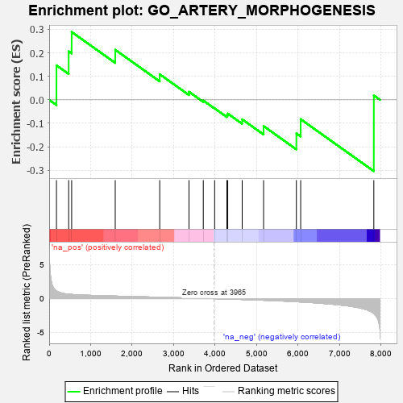
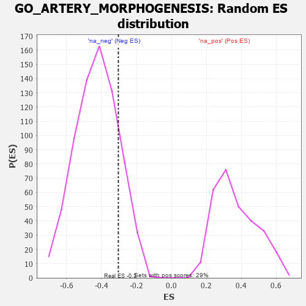

| | | Dataset | 7d |
| Phenotype | NoPhenotypeAvailable |
| Upregulated in class | na_neg |
| GeneSet | GO_ARTERY_MORPHOGENESIS |
| Enrichment Score (ES) | -0.30376208 |
| Normalized Enrichment Score (NES) | -0.7097609 |
| Nominal p-value | 0.83898306 |
| FDR q-value | 1.0 |
| FWER p-Value | 1.0 |
Table: GSEA Results Summary

Fig 1: Enrichment plot: GO_ARTERY_MORPHOGENESIS
Profile of the Running ES Score & Positions of GeneSet Members on the Rank Ordered List
| PROBE | GENE SYMBOL | GENE_TITLE | RANK IN GENE LIST | RANK METRIC SCORE | RUNNING ES | CORE ENRICHMENT | | 1 | FOXF1 | | | 176 | 1.136 | 0.1469 | Yes |
| 2 | LRP1 | | | 470 | 0.648 | 0.2066 | Yes |
| 3 | SRF | | | 542 | 0.615 | 0.2891 | Yes |
| 4 | NPRL3 | | | 1592 | 0.375 | 0.2131 | No |
| 5 | ARID2 | | | 2664 | 0.204 | 0.1088 | No |
| 6 | SMAD7 | | | 3369 | 0.093 | 0.0343 | No |
| 7 | NF1 | | | 3713 | 0.040 | -0.0029 | No |
| 8 | EYA1 | | | 3987 | -0.006 | -0.0364 | No |
| 9 | WNT11 | | | 4282 | -0.056 | -0.0650 | No |
| 10 | TBX2 | | | 4303 | -0.060 | -0.0585 | No |
| 11 | MYLK | | | 4651 | -0.128 | -0.0831 | No |
| 12 | TBX1 | | | 5166 | -0.241 | -0.1118 | No |
| 13 | PRDM1 | | | 5956 | -0.457 | -0.1430 | No |
| 14 | JAG1 | | | 6060 | -0.494 | -0.0824 | No |
| 15 | PKD2 | | | 7822 | -2.167 | 0.0187 | No |
Table: GSEA details [plain text format]

Fig 2: GO_ARTERY_MORPHOGENESIS: Random ES distribution
Gene set null distribution of ES for GO_ARTERY_MORPHOGENESIS